PASS
2026-09-28 11:13:25 · позиций 16 · FAIL 0 · аномалий вне деталей 0 · невязка фидуциалов 0.0016929850237672357 мм · ECC 0.989
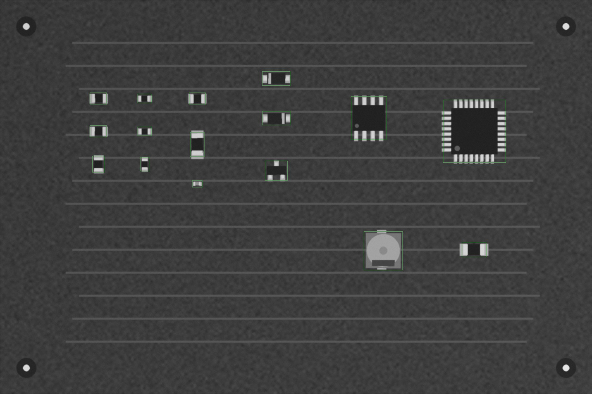
Кроп: живая плата (выровнена) | эталон (жёлтое — метка полярности, синее — место метки при 180°) | карта отклонений σ
| C1 100n · 0603 | PASS | ncc 0.998 · ncc_thr 0.6 · mad 2.6 · mad_thr 11.5 · dx_mm 0.0 · dy_mm 0.0 · dtheta_deg -0.0 · anomaly_px 0 |
| C2 1u · 0805 | PASS | 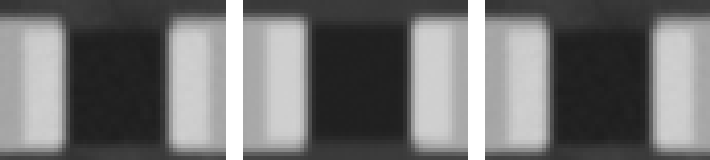 ncc 0.997 · ncc_thr 0.6 · mad 2.7 · mad_thr 9.8 · dx_mm 0.0 · dy_mm 0.0 · dtheta_deg -0.0 · anomaly_px 0 |
| C3 10u · 1206 | PASS | 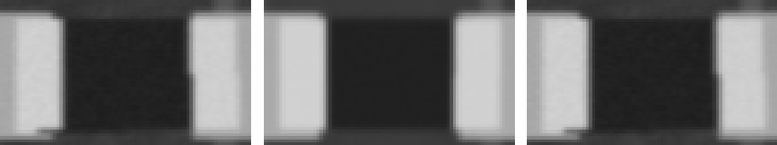 ncc 0.995 · ncc_thr 0.6 · mad 3.4 · mad_thr 8.0 · dx_mm 0.045 · dy_mm 0.0 · dtheta_deg -0.0 · anomaly_px 0 |
| C4 100n · 0402 | PASS | ncc 0.955 · ncc_thr 0.6 · mad 4.0 · mad_thr 9.8 · dx_mm -0.045 · dy_mm -0.045 · dtheta_deg -0.0 · anomaly_px 0 |
| C5 47u · CP_Elec_5x5.8 | PASS | 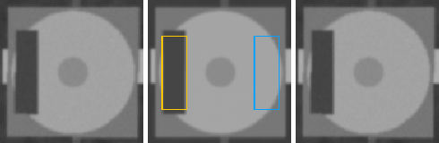 ncc 0.995 · ncc_thr 0.6 · ncc_180 0.673 · mad 2.3 · mad_thr 7.7 · mad_180 18.0 · mark_ncc 0.929 · mark_ncc_180 -0.128 · dx_mm 0.0 · dy_mm 0.0 · dtheta_deg -0.0 · anomaly_px 0 |
| D1 SS14 · SOD-123 · SS14 | PASS | 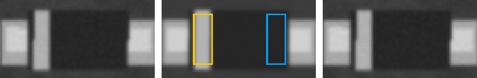 ncc 0.987 · ncc_thr 0.6 · ncc_180 0.816 · mad 2.2 · mad_thr 7.9 · mad_180 9.2 · mark_ncc 0.94 · mark_ncc_180 -0.041 · dx_mm 0.0 · dy_mm 0.0 · dtheta_deg -0.0 · anomaly_px 0 |
| D2 1N4148W · SOD-123 · SS14 | PASS | 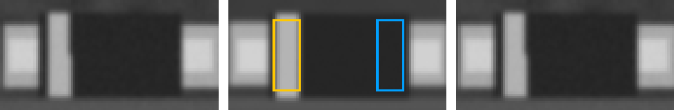 ncc 0.984 · ncc_thr 0.6 · ncc_180 0.822 · mad 2.3 · mad_thr 7.6 · mad_180 10.0 · mark_ncc 0.954 · mark_ncc_180 -0.046 · dx_mm -0.045 · dy_mm -0.045 · dtheta_deg -0.0 · anomaly_px 0 |
| Q1 BSS138 · SOT-23 · BSS138 | PASS | 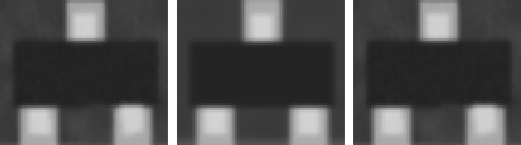 ncc 0.967 · ncc_thr 0.6 · ncc_180 0.811 · mad 1.1 · mad_thr 7.2 · mad_180 8.1 · dx_mm 0.0 · dy_mm -0.045 · dtheta_deg -0.0 · anomaly_px 0 |
| R1 10k · 0805 | PASS | 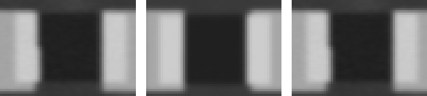 ncc 0.992 · ncc_thr 0.6 · mad 5.6 · mad_thr 9.9 · dx_mm 0.045 · dy_mm 0.0 · dtheta_deg -0.0 · anomaly_px 0 |
| R2 10k · 0805 | PASS | 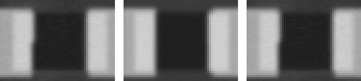 ncc 0.992 · ncc_thr 0.6 · mad 6.0 · mad_thr 8.6 · dx_mm 0.0 · dy_mm 0.0 · dtheta_deg -0.0 · anomaly_px 0 |
| R3 4k7 · 0805 | PASS | 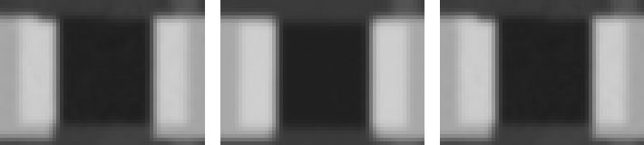 ncc 0.994 · ncc_thr 0.6 · mad 4.4 · mad_thr 9.3 · dx_mm 0.0 · dy_mm 0.0 · dtheta_deg -0.0 · anomaly_px 0 |
| R4 1k · 0603 | PASS | ncc 0.996 · ncc_thr 0.6 · mad 4.0 · mad_thr 9.5 · dx_mm -0.045 · dy_mm 0.0 · dtheta_deg -0.0 · anomaly_px 0 |
| R5 1k · 0603 | PASS | ncc 0.997 · ncc_thr 0.6 · mad 3.7 · mad_thr 10.6 · dx_mm 0.0 · dy_mm 0.0 · dtheta_deg -0.0 · anomaly_px 0 |
| R6 0R · 1206 | PASS | 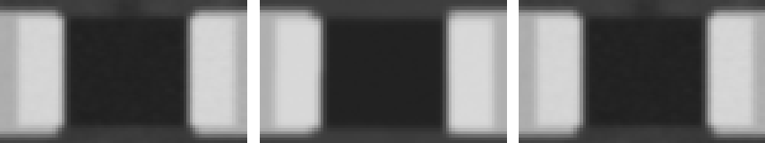 ncc 0.995 · ncc_thr 0.6 · mad 3.8 · mad_thr 8.5 · dx_mm -0.045 · dy_mm 0.0 · dtheta_deg -0.0 · anomaly_px 0 |
| U1 LM358 · SOIC-8 · LM358DR | PASS | 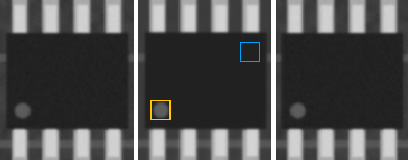 ncc 0.985 · ncc_thr 0.6 · ncc_180 0.898 · mad 1.1 · mad_thr 7.1 · mad_180 3.1 · mark_ncc 0.961 · mark_ncc_180 -0.141 · dx_mm 0.0 · dy_mm 0.0 · dtheta_deg -0.0 · anomaly_px 0 |
| U2 STM8S003 · TQFP-32 · STM8S003F3P6 | PASS | 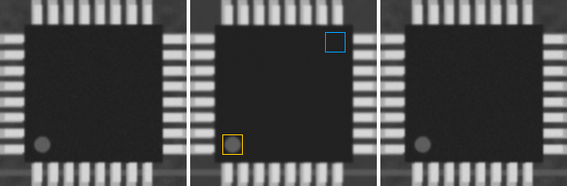 ncc 0.987 · ncc_thr 0.6 · ncc_180 0.888 · mad 1.0 · mad_thr 7.1 · mad_180 2.5 · mark_ncc 0.996 · mark_ncc_180 -0.083 · dx_mm 0.0 · dy_mm 0.0 · dtheta_deg -0.0 · anomaly_px 0 |